2004年7月21日～23日 房総半島自転車ツーリング
高校のサイクリング部で房総半島を2泊3日で自転車ツーリングした。他の部員が写っている写真を除いたので枚数は少ないが写真を紹介。
1日目 千葉駅～安房鴨川
千葉県千葉市の千葉駅に集合し出発。出発直後は道が狭く、大型車も多く大変だった記憶がある。
朝の9時くらいにスタートして、12時くらいの写真。当時すでにいっちょまえにレーパンを履くようになっていた。
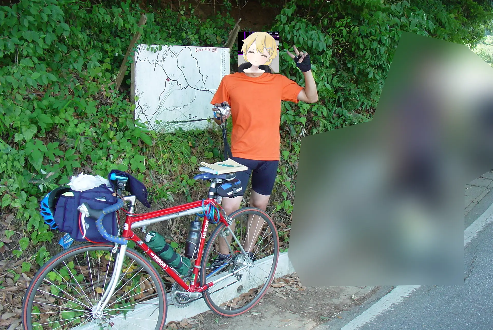千葉県木更津市の丹原林道というところを抜けたようだ。
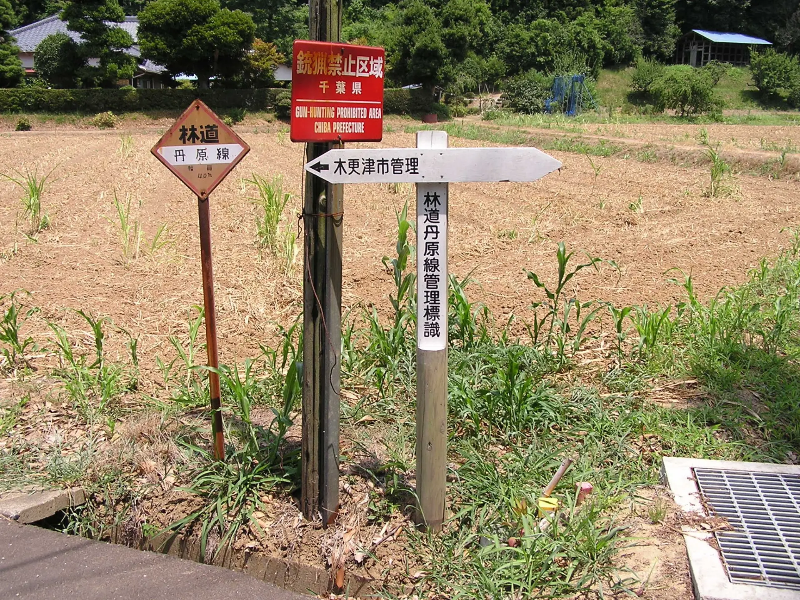若い。
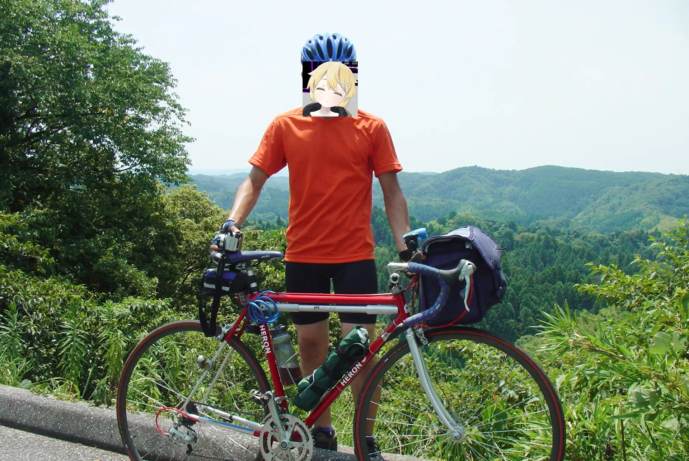パンクした。タキザワサイクルかウエムラパーツが池袋サンシャインシティで開いていた即売会で買った、1本1,000円のワイヤービードのタイヤを履いていたのだが、サイドが非常に薄く、たしかこのとき少し裂けてしまったはず。このときはガムテを貼って最後まで乗り切った。
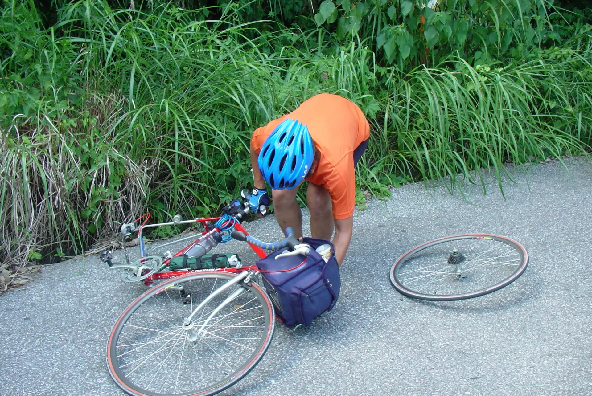トンネルが多かった。画像の工事中のトンネルは千葉県君津市らしい。あと覚えているのは、この日、23cのロードバイクにもかかわらず途中砂利道をそれなりの距離無理矢理通過したこと。
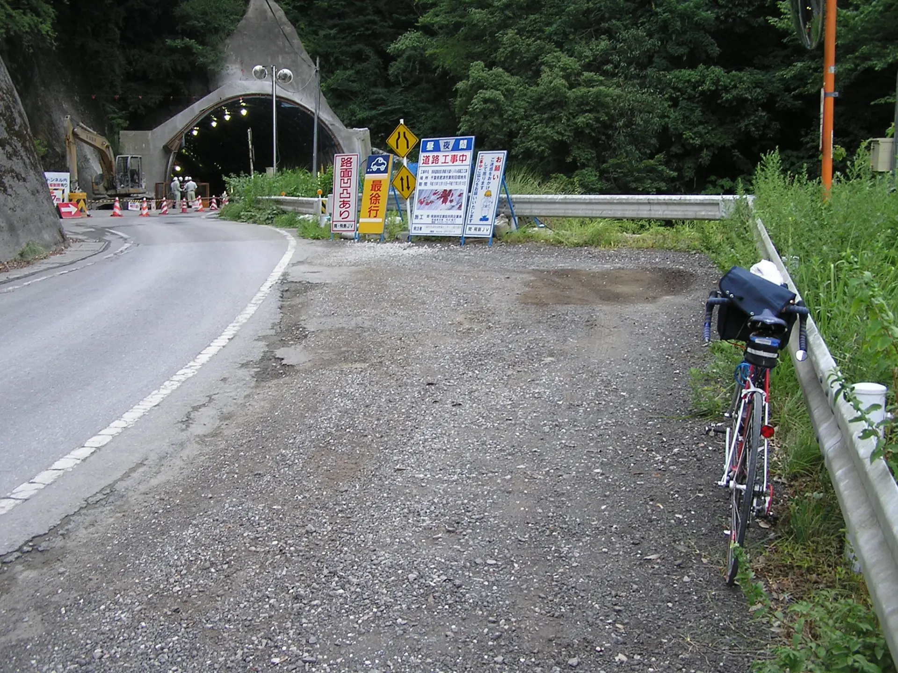初日は千葉県安房鴨川市まで。
2日目 安房鴨川～野島崎往復
2日目は安房鴨川から、房総半島最南端の野島崎まで往復した。

どこかの漁港にて。解像度が低くて顔が判別できないのでモザイクなし。
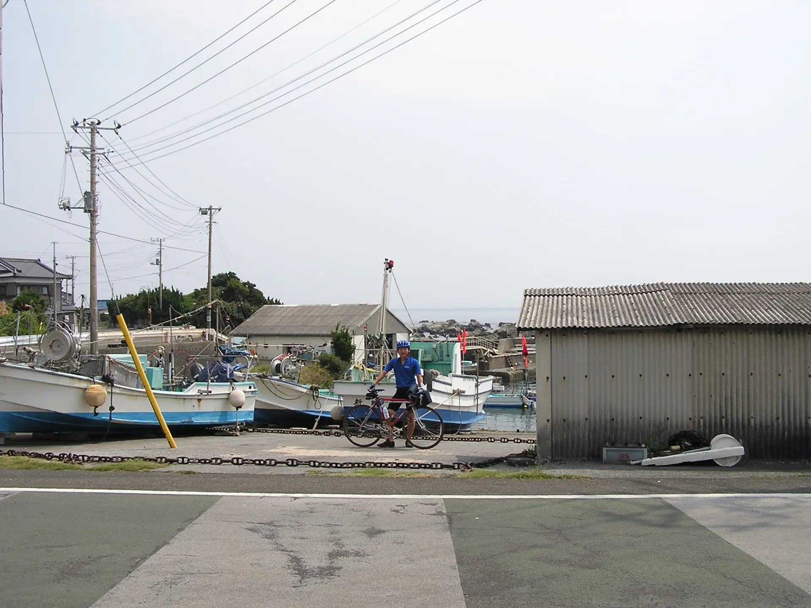どこの岩場かわからないのだが、おそらく白浜のようだ。岩場に自転車を担いでいって記念撮影。
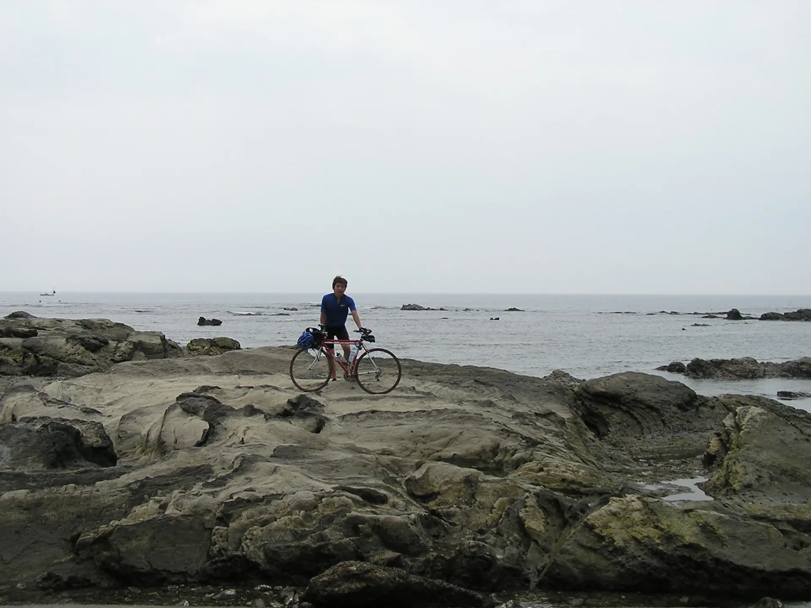 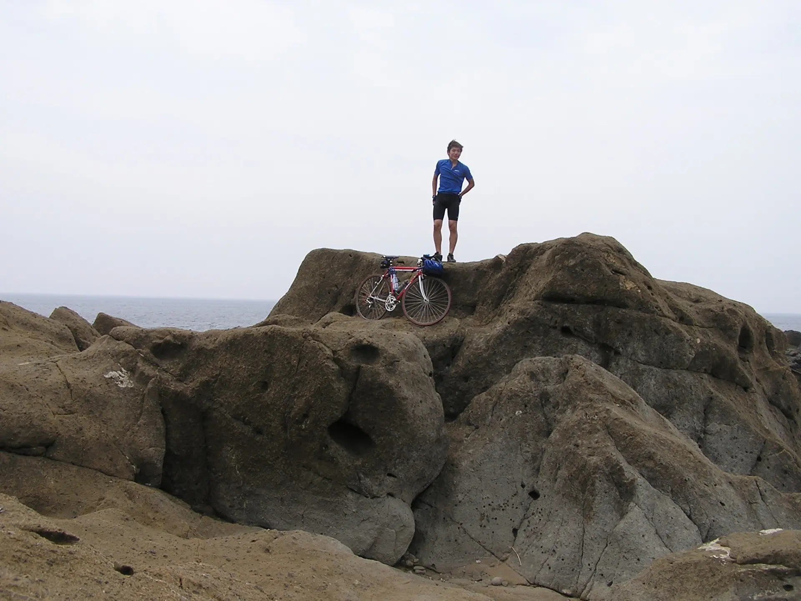南房総白浜海岸にて。ぼかしをかけているのは他の部員。
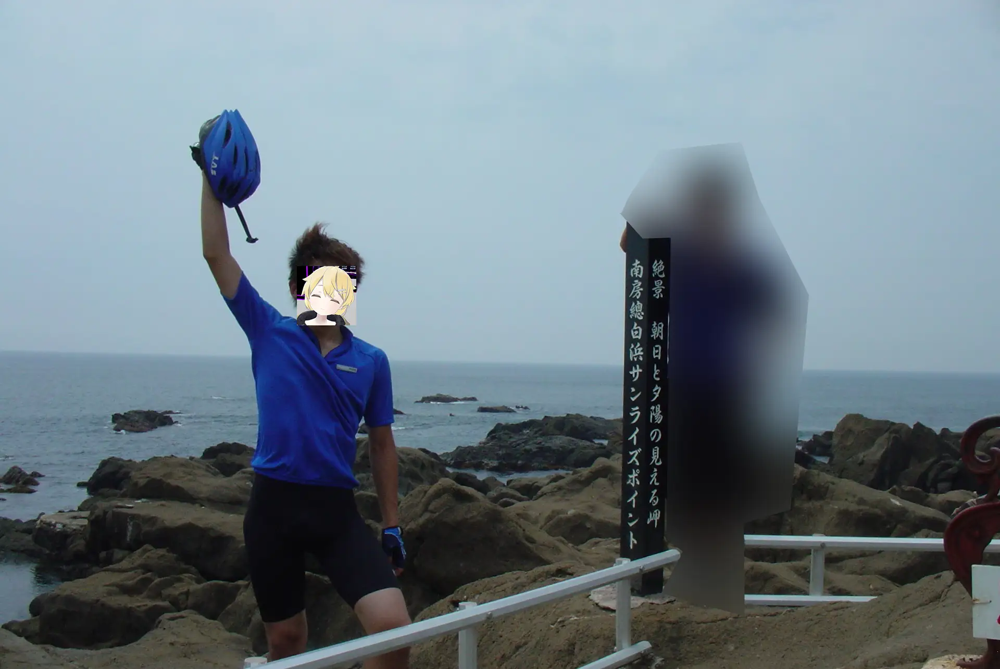そして、房総半島最南端の野島崎へ。
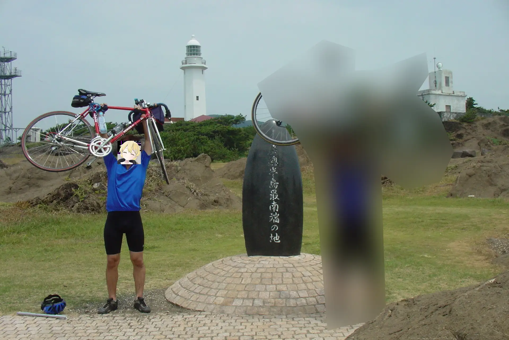当時乗っていたブリヂストンレイダック改ロードバイク。ホイールは自分で組んだのだが、フロントをラジアルで組んでいるのがよくない。1055系105なので、これをやるとハブのフランジが壊れる。

そのあと、安房鴨川まで戻って海水浴をした。
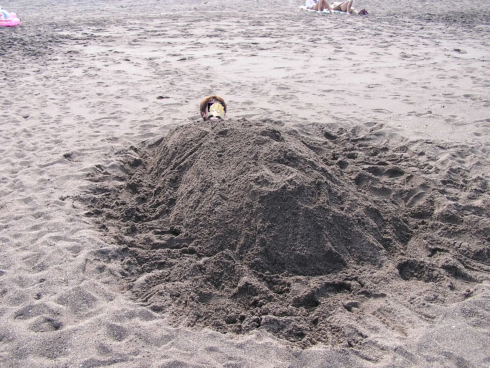3日目 安房鴨川～千葉駅
ということで、この手の旅行の写真にありがちだが、帰路は全然写真がない。安房鴨川を出て、勝浦から内陸に入って、平坦な道を上総牛久あたり経由で千葉駅まで帰った。
さて、この2004年の夏は、自転車旅行はこれで終わりなのだった。本当は北海道に行きたかったのだが、なんと、ネトゲにはまってしまって夏休みを潰してしまった。自分があまりゲームをやらなくなったのは、これにこりたからという理由が大きい。
2025年12月19日記事公開